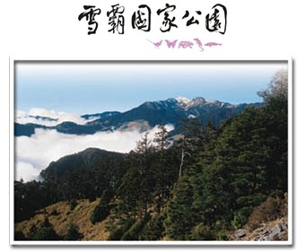

「雪霸國家公園」位於台灣本島之中北部，境內高山林立，景觀壯麗，由大安溪河谷海拔760公尺至3886公尺的雪山主峰，高差達3000多公尺，自然資源極為豐富；園區範圍以雪山山脈的河谷稜線為界，東起羅葉尾山，西迄東洗水山，南至宇羅尾山，北抵境界山，總面積達76,850公頃，涵括新竹縣五峰鄉、尖石鄉、苗栗縣泰安鄉、台中縣和平鄉，屬於高山型之國家公園。
國家公園皆有其獨特的景觀與自然資源，這種個體的差異可以從象徵的圖騰上表現出來，以雪霸的標誌來看，圓型造形，意謂著策勉處內同仁的齊心協力；在內容的設計是為呈現園區的資源特色：山岳表示以雪山、大霸尖山為表率的山岳型國家公園；蜿蜒綿連的綠水取源遠流長的意義；悠遊躍動的櫻花鉤吻鮭則是凸顯出國家公園生態保育的重責大任；而青山綠水復是環保的理想園地，處處彰顯國家公園百年大計的事業。